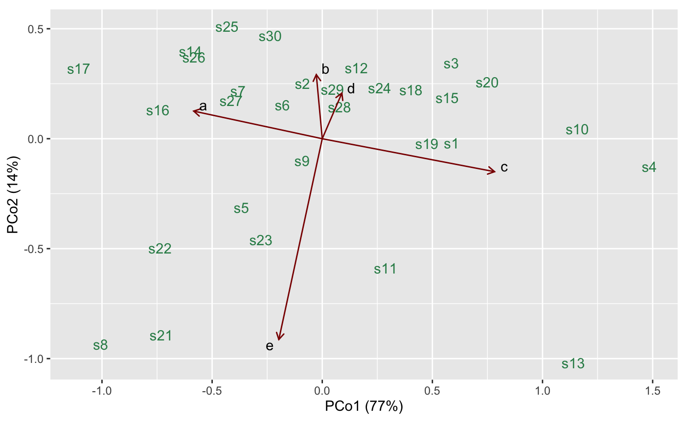
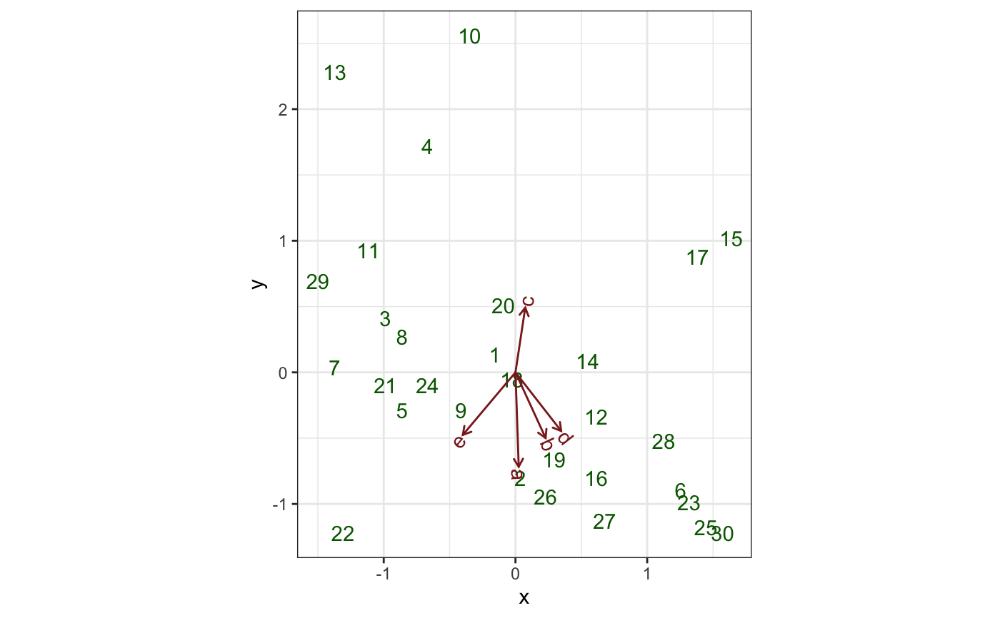

Multivariate marine biological and environmental data
bioenv.RdSpecies counts and environmental variables for several locations on a sea-bed.
data(bioenv)
Format
A tibble.
Source
Greenacre (2010), pp. 25--26.
References
Greenacre MJ (2010) Biplots in Practice. Fundacion BBVA, ISBN: 978-84-923846. https://www.fbbva.es/microsite/multivariate-statistics/biplots.html
Examples
# Linear regression on marine ecosystem data # Adapt Exhibit 2.3 in Greenacre (2010) data(bioenv) bioenv %>% transform( x = as.vector(scale(Depth)), y = as.vector(scale(Pollution)) ) %>% lm(formula = d ~ x + y) %>% as_tbl_ord() %>% augment() %>% print() -> bioenv_lm#> # A tbl_ord of class 'lm': (30 x 3) x (1 x 3)' #> # 3 coordinates: (Intercept), x, y #> # #> # Rows: [ 30 x 3 | 7 ] #> `(Intercept)` x y | .name .hat .sigma .cooksd #> | <chr> <dbl> <dbl> <dbl> #> 1 1 -0.156 0.132 | 1 1 0.0344 5.20 6.85e-3 #> 2 1 0.0363 -0.802 | 2 2 0.0587 5.24 4.64e-3 #> 3 1 -0.988 0.413 | 3 3 0.0670 5.26 3.62e-4 #> 4 1 -0.668 1.72 | 4 4 0.135 5.25 3.50e-3 #> 5 1 -0.860 -0.288 | 5 5 0.0750 5.26 6.07e-5 #> # … with 25 more rows, and 3 more #> # Rows: [ 30 x 3 | 7 ]# variables: .wt.res <dbl>, #> `(Intercept)` x y | # .fit <dbl>, .se.fit <dbl> #> # #> # Columns: [ 1 x 3 | 1 ] #> `(Intercept)` x y | .name #> | <chr> #> 1 10.9 2.31 -2.97 | 1 dbioenv_lm %>% ggbiplot(aes(x = x, y = y, color = .fit, alpha = .wt.res ^ 2)) + theme_bw() + scale_color_distiller(type = "div", palette = 1) + scale_alpha_continuous(range = c(1/3, 1)) + geom_rows_point() + geom_cols_vector() + geom_cols_isolines(aes(intercept = `(Intercept)`), axes = 1, by = 5) + labs(x = "Standardized Depth", y = "Standardized Pollution") + ggtitle( "Gradient vector and contour lines for species 'd'", "Regression plane: standardized depth-pollution space" )#> Warning: Ignoring unknown aesthetics: intercept# Classical MDS on marine ecosystem data # Adapt Exhibit 4.6 in Greenacre (2010) ycols <- 2:6 # chi-squared distances chidist <- function(mat, rowcol = 1) { if (rowcol == 1) { prof <- mat / apply(mat, 1, sum) rootaveprof <- sqrt(apply(mat, 2, sum) / sum(mat)) } if (rowcol == 2) { prof <- t(mat) / apply(mat, 2, sum) rootaveprof <- sqrt(apply(mat, 1, sum) / sum(mat)) } dist(scale(prof, FALSE, rootaveprof)) } # multidimensional scaling of species counts by chi-squared distances data(bioenv) bioenv[, ycols] %>% chidist() %>% cmdscale_ord() %>% as_tbl_ord() %>% mutate_rows(.name = bioenv$site) %>% print() -> bioenv_cmds#> # A tbl_ord of class 'cmds_ord': (30 x 2) x (30 x 2)' #> # 2 coordinates: PCo1 and PCo2 #> # #> # Rows: [ 30 x 2 | 1 ] #> PCo1 PCo2 | .name #> | <chr> #> 1 0.587 -0.0197 | 1 s1 #> 2 -0.0901 0.252 | 2 s2 #> 3 0.586 0.344 | 3 s3 #> 4 1.48 -0.127 | 4 s4 #> 5 -0.367 -0.312 | 5 s5 #> # … with 25 more rows #> # #> # Columns: [ 30 x 2 | 0 ] #> PCo1 PCo2 | #> | #> 1 0.587 -0.0197 | #> 2 -0.0901 0.252 | #> 3 0.586 0.344 | #> 4 1.48 -0.127 | #> 5 -0.367 -0.312 | #># regress species relative frequencies on principal coordinates bioenv[, ycols] %>% sweep(1, 1 / rowSums(bioenv[, ycols]), "*") %>% sweep(2, sqrt(sum(bioenv[, ycols]) / colSums(bioenv[, ycols])), "*") %>% as.matrix() -> bioenv_relfreq lm(bioenv_relfreq ~ get_rows(bioenv_cmds)) %>% as_tbl_ord() %>% print() -> bioenv_lm#> # A tbl_ord of class 'mlm': (30 x 3) x (5 x 3)' #> # 3 coordinates: (Intercept), PCo1, PCo2 #> # #> # Rows: [ 30 x 3 | 0 ] #> `(Intercept)` PCo1 PCo2 | #> | #> 1 1 0.587 -0.0197 | #> 2 1 -0.0901 0.252 | #> 3 1 0.586 0.344 | #> 4 1 1.48 -0.127 | #> 5 1 -0.367 -0.312 | #> #> # #> # Columns: [ 5 x 3 | 0 ] #> `(Intercept)` PCo1 PCo2 | #> | #> 1 0.545 -0.584 0.126 | #> 2 0.348 -0.0270 0.292 | #> 3 0.499 0.782 -0.150 | #> 4 0.498 0.0892 0.207 | #> 5 0.317 -0.197 -0.913 |# biplot of species with regression vectors onto principal coordinates ggbiplot(bioenv_cmds, aes(label = .name)) + geom_rows_text(color = "seagreen") + geom_cols_vector(data = bioenv_lm, color = "darkred") + geom_cols_text_repel(data = bioenv_lm)# Generalized multiple linear regression on marine ecosystem data # Reproduce Exhibit 2.5 in Greenacre (2010) data(bioenv) bioenv_std <- dplyr::mutate_if(bioenv, is.numeric, ~ as.vector(scale(.))) resp_std <- as.matrix(dplyr::select(bioenv_std, a:e)) pred_std <- as.matrix(dplyr::select(bioenv_std, x = Depth, y = Pollution)) lm(resp_std ~ pred_std + 0) %>% as_tbl_ord() %>% print() -> bioenv_std_mlm#> # A tbl_ord of class 'mlm': (30 x 2) x (5 x 2)' #> # 2 coordinates: x and y #> # #> # Rows: [ 30 x 2 | 0 ] #> x y | #> | #> 1 -0.156 0.132 | #> 2 0.0363 -0.802 | #> 3 -0.988 0.413 | #> 4 -0.668 1.72 | #> 5 -0.860 -0.288 | #> #> # #> # Columns: [ 5 x 2 | 0 ] #> x y | #> | #> 1 0.0247 -0.717 | #> 2 0.229 -0.499 | #> 3 0.0742 0.491 | #> 4 0.347 -0.446 | #> 5 -0.400 -0.475 |ggbiplot(bioenv_std_mlm, aes(label = .name)) + theme_bw() + geom_rows_text(color = "darkgreen") + geom_cols_vector(color = "brown4") + geom_cols_text_radiate(color = "brown4")# Reproduce Exhibit 3.2 in Greenacre (2010) bioenv %>% dplyr::mutate_at(dplyr::vars(a:e), ~ . ^ (1/4)) %>% dplyr::mutate_at(dplyr::vars(Pollution:Depth), ~ as.vector(scale(.))) %>% print() -> bioenv_4rt#> # A tibble: 30 x 10 #> site a b c d e Pollution Depth Temperature Sediment #> <chr> <dbl> <dbl> <dbl> <dbl> <dbl> <dbl> <dbl> <dbl> <chr> #> 1 s1 0 1.19 1.73 1.93 1.19 0.132 -0.156 3.5 S #> 2 s2 2.26 1.41 1.90 1.82 0 -0.802 0.0363 2.5 C #> 3 s3 0 1.78 1.73 1.68 0 0.413 -0.988 2.7 C #> 4 s4 0 0 1.97 1.32 0 1.72 -0.668 2.9 S #> 5 s5 1.90 1.50 1.32 1.78 1.63 -0.288 -0.860 3.1 C #> 6 s6 2.36 2.14 1.90 2 1.50 -0.895 1.25 3.5 G #> 7 s7 1.73 1.57 0 1.82 1.19 0.0389 -1.37 2.9 S #> 8 s8 1.19 0 0 0 1 0.272 -0.860 3.3 C #> 9 s9 2.03 1.63 1.78 1.93 1.57 -0.288 -0.412 3.4 C #> 10 s10 0 1.50 2.26 1.73 0 2.56 -0.348 3 S #> # … with 20 more rowsresp_4rt <- as.matrix(dplyr::select(bioenv_4rt, a:e)) pred_4rt <- as.matrix(dplyr::select(bioenv_4rt, x = Depth, y = Pollution)) lm(resp_4rt ~ pred_4rt + 0) %>% as_tbl_ord() %>% print() -> bioenv_4rt_mlm#> # A tbl_ord of class 'mlm': (30 x 2) x (5 x 2)' #> # 2 coordinates: x and y #> # #> # Rows: [ 30 x 2 | 0 ] #> x y | #> | #> 1 -0.156 0.132 | #> 2 0.0363 -0.802 | #> 3 -0.988 0.413 | #> 4 -0.668 1.72 | #> 5 -0.860 -0.288 | #> #> # #> # Columns: [ 5 x 2 | 0 ] #> x y | #> | #> 1 0.0732 -0.672 | #> 2 0.00598 -0.506 | #> 3 0.0855 0.387 | #> 4 0.0596 -0.288 | #> 5 -0.255 -0.375 |ggbiplot(bioenv_4rt_mlm, aes(x = x, y = y, label = .name)) + theme_bw() + geom_rows_text(color = "darkgreen") + geom_cols_vector(color = "brown4") + geom_cols_text_radiate(color = "brown4")